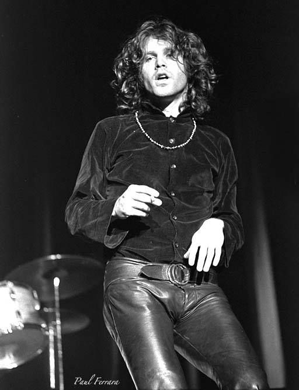
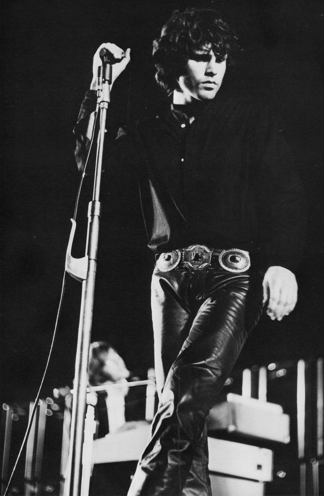

Jim Morrison
Ο Τζέημς «Τζιμ» Ντάγκλας Μόρισον (James "Jim" Douglas Morrison, 8 Δεκεμβρίου 1943 - 3 Ιουλίου 1971) ήταν Αμερικανός τραγουδιστής, τραγουδοποιός, συγγραφέας και ποιητής. Γεννήθηκε στη Μελβούρνη της Φλόριντα και ήταν ο τραγουδιστής και στιχουργός του δημοφιλούς αμερικάνικου ροκ συγκροτήματος The Doors. Θεωρείται ένας από τους πιο χαρισματικούς ερμηνευτές στην ιστορία της ροκ μουσικής. Έγραψε επίσης αρκετά βιβλία ποίησης, ένα μικρό ντοκιμαντέρ και δύο βίντεο κλιπ ("The Unknown Soldier" και "People are Strange"). Ο θάνατός του σε ηλικία 27 ετών στο Παρίσι της Γαλλίας κατέπληξε τους θαυμαστές του. Οι περιστάσεις κάτω από τις οποίες πέθανε και ο μυστικός ενταφιασμός του έγιναν αφορμή για ατελείωτες φήμες και παίζουν σημαντικό ρόλο στο μυστήριο που εξακολουθεί να τον περιβάλλει.
 
Δημιουργός του site
Μεγαλες επιτυχιες!
- The end
- Riders on the storm
- People are strange
Επισκεφτείτε επίσης τη σελίδα του συνάδελφου μου(ΑΕΜ 4167)